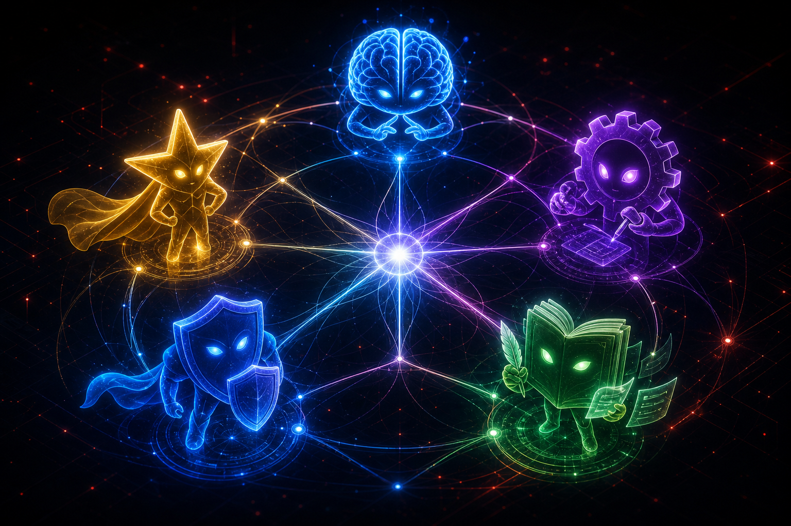
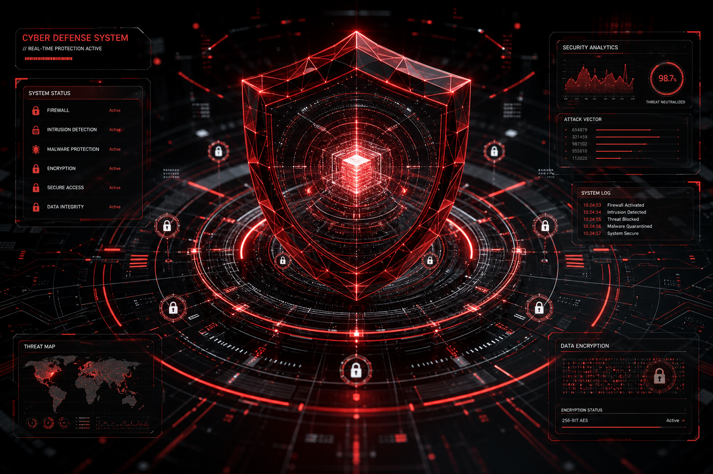

OpenClaw:
A Nova Fronteira
dos Agentes de IA
Da automação assistida à colaboração com agentes especializados — um novo paradigma para times de tecnologia
⚠️ O Problema Atual
Ferramentas de IA ainda funcionam como copilotos isolados — úteis, mas limitadas.
Falta de Contexto
Sessões isoladas sem memória de longo prazo ou entendimento do seu ecossistema. Cada interação recomeça do zero.
Sem Integração Real
Não acessam APIs, clusters, repositórios ou sistemas produtivos de forma nativa e segura.
Sem Especialização
Um único modelo tenta fazer tudo. Sem subagentes, sem delegação, sem times de especialistas coordenados.
Fluxos Curtos
Não sustentam tarefas longas com múltiplas etapas e decisões intermediárias.
Ferramentas Limitadas
Plugin models pobres, sem ecossistema de extensão ou MCPs para conectar o mundo real.
Sem Evolução
Não aprendem com erros, não melhoram com o tempo, não incorporam feedback do usuário.
📜 Breve Histórico do OpenClaw
Da ideia ao ecossistema — a evolução em tempo real.
📊 Crescimento da Adoção
Dados ilustrativos — tendência observada na comunidade OpenClaw.
* Dados ilustrativos baseados em tendências da comunidade. Consulte fontes oficiais para números precisos.
Agentes por usuário (média)
Tarefas/dia por agente
Horas economizadas/semana
💎 Por que o OpenClaw é Diferente?
❌ O que NÃO é
- ✗ Apenas um chat com IA
- ✗ Apenas desktop remoto
- ✗ Apenas automação RPA
- ✗ Apenas um agente único
- ✗ Apenas uma CLI melhorada
✅ O que REALMENTE é
- ✓ Ambiente de execução e coordenação de agentes
- ✓ Subagentes especializados com papéis definidos
- ✓ Memória persistente e de longo prazo
- ✓ SOUL — identidade, personalidade e limites
- ✓ MCPs para integração com o mundo real
- ✓ Melhoria contínua — aprende e evolui
"O OpenClaw não é uma ferramenta. É um ambiente onde agentes vivem, trabalham e evoluem."
📋 Comparativo: OpenClaw vs Alternativas
| Recurso | OpenClaw | Hermes | Cloud Desktop | Agentes Tradicionais |
|---|---|---|---|---|
| Autonomia | ★★★★★ | ★★★☆☆ | ★★☆☆☆ | ★★☆☆☆ |
| Subagentes | ★★★★★ | ★★☆☆☆ | ★☆☆☆☆ | ★☆☆☆☆ |
| Memória Persistente | ★★★★★ | ★★★☆☆ | ★★☆☆☆ | ★★☆☆☆ |
| Plugins | ★★★★★ | ★★★☆☆ | ★★☆☆☆ | ★★★☆☆ |
| MCPs | ★★★★★ | ★★☆☆☆ | ★☆☆☆☆ | ★☆☆☆☆ |
| Execução Real | ★★★★★ | ★★★☆☆ | ★★★★☆ | ★★☆☆☆ |
| Personalização | ★★★★★ | ★★★☆☆ | ★★☆☆☆ | ★★☆☆☆ |
| Observabilidade | ★★★★★ | ★★☆☆☆ | ★★★☆☆ | ★☆☆☆☆ |
| Engenharia | ★★★★★ | ★★★☆☆ | ★★☆☆☆ | ★★☆☆☆ |
| Demos Rápidas | ★★★★★ | ★★★☆☆ | ★★★★☆ | ★★☆☆☆ |
| Evolução Contínua | ★★★★★ | ★★☆☆☆ | ★☆☆☆☆ | ★☆☆☆☆ |
Avaliação qualitativa baseada em experiência prática. ★★★★★ = excelente, ★☆☆☆☆ = limitado.
🏗️ Arquitetura Conceitual
🛠️ Passo a Passo: Instalação
Preparar Ambiente
Linux (ou macOS). Node.js 20+. Git. Um diretório dedicado.
Contas Separadas
Email, GitHub e Telegram dedicados para o OpenClaw. Isolamento de segurança.
Configurar Providers
DeepSeek, OpenAI, ou Claude como providers. Defina agente principal com o modelo mais forte.
Instalar Plugins
Plugins essenciais: self-improving, vetter, browser-automation, taskflow.
Configurar MCPs
GitHub, filesystem, Kubernetes (opcional). Tokens com permissões mínimas.
Criar Primeiro Agente
Defina SOUL.md, memória inicial, ferramentas disponíveis. Teste um fluxo simples.
"O setup inicial leva 20 minutos. O primeiro 'uau' acontece nos primeiros 5."
✅ Boas Práticas Iniciais
Comece pelo Telegram
Melhor canal para primeiras interações — rápido, notificações em tempo real, e a assincronicidade do agente fica natural.
RecomendadoContas Exclusivas
Crie e-mail, GitHub e Telegram dedicados. Reduz drasticamente riscos de segurança e mantém tudo organizado.
SegurançaTokens com Permissões Mínimas
GitHub token só com escopos necessários. Chaves de API com limites de uso. Nunca use credenciais pessoais.
CríticoSepare Ambientes
Dev/test antes de produção. Um agente em sandbox pode quebrar coisas de forma segura. Aprenda com os erros.
PráticaVá com Calma
Não conecte tudo de uma vez. Adicione ferramentas gradualmente. Cada integração nova precisa ser validada.
PaciênciaMantenha Logs e Auditoria
Ative logging. Revise ações dos agentes periodicamente. A observabilidade é sua melhor aliada.
Governança🎯 Providers Recomendados
🧠 Agente Principal
DeepSeek v4 — melhor custo-benefício para coordenação geral, raciocínio e tomada de decisão.
Principal⚡ Rápidos e Baratos
DeepSeek Flash, GPT-4o Mini — tarefas simples, respostas rápidas e consumo econômico.
Rotina💪 Raciocínio Complexo
o3, Claude Sonnet — para problemas que exigem cadeias longas de raciocínio e análise profunda.
Profundo💻 Coding
Claude Sonnet, GPT-5.1 Codex — modelos especializados com geração e revisão de código superiores.
Código🎙️ Voz
ElevenLabs — vozes realistas para demos, treinamentos e experiências interativas.
Áudio🔒 Locais / Privacidade
Ollama, vLLM — modelos locais quando dados sensíveis não podem sair do ambiente.
Privacidade🤝 O Poder dos Subagentes
O agente principal não precisa saber tudo. Ele precisa saber delegar.
Arquiteto
Projeta soluções, avalia trade-offs, define estratégias técnicas.
Desenvolvedor
Escreve código, refatora, implementa features, gera testes.
Revisor
Code review, validação de segurança, checagem de boas práticas.
Segurança
Varredura de vulnerabilidades, análise de permissões, compliance.
OpenShift
Diagnóstico de clusters, análise de logs, geração de manifests.
Documentação
Cria docs, runbooks, READMEs, wikis e apresentações.
Demo
Prepara ambientes, roteiros, scripts e narrativas para demos.
Suporte
Responde dúvidas, investiga problemas, orienta usuários.
Analytics
Analisa dados, gera relatórios, identifica padrões e insights.

🎙️ Vozes Diferentes com ElevenLabs
Cada agente com sua própria identidade vocal — um toque de personalidade que transforma a experiência.
Agente Principal (Navi)
Voz clara, amigável e confiante. Tom de assistente que guia sem ser intrusiva.
PrincipalArquiteto Técnico
Voz séria, precisa e analítica. Tom de consultor experiente explicando decisões.
TécnicoSegurança
Voz firme e direta. Transmite autoridade quando alerta sobre riscos.
SegurançaNarrador de Demos
Voz envolvente e dinâmica. Ideal para apresentações e storytelling.
DemosSuporte
Voz calma e paciente. Tom acolhedor para orientar usuários.
SuporteOperações / SRE
Voz enérgica e objetiva. Tom de comando em situações de incidente.
Operações👥 Nossa Equipe de Agentes
Cada agente com personalidade, função e voz própria — um time digital de especialistas.
Navi ▶
🧠 Assistente geral · Coordenação
🗣️ Voz Keren (feminina)
🎯 Orquestradora do time
Link ▶
🔧 Executor técnico · GitHub, deploys
🗣️ Voz Rachel (neutra)
🎯 Mão na massa — cria, comita, deploya
Sheikah ▶
🛡️ Segurança da Informação
🗣️ Voz Sheikah (masculina)
🎯 Hardening, análise de vulns, pentest
Goron ▶
💪 Personal trainer & nutrição
🗣️ Voz Paulo Becker (masculina)
🎯 Treinos, dietas, motivação fitness
Rito ▶
📧 Comunicação & e-mail
🗣️ Voz Rachel (neutra)
🎯 Gmail, notificações, avisos
Beedle ▶
💰 Compras inteligentes
🗣️ Voz Karen (neutra)
🎯 Monitora preços, acha ofertas
🎙️ ElevenLabs — clique no ▶ para ouvir cada agente se apresentar
⚙️ Exemplo: Agente "Arquiteto OpenShift"
Uma configuração real de agente especializado em clusters OpenShift.
Cada agente pode ter sua própria combinação de personalidade, ferramentas, memória e regras de segurança.
🧬 SOUL + Memória: A Identidade do Agente
SOUL.md — A Alma
- ✓ Define identidade — quem o agente é
- ✓ Define comportamento — como ele age
- ✓ Define estilo — como ele se comunica
- ✓ Define limites — o que ele não faz
- ✓ Torna o agente consistente entre sessões
MEMORY.md — A Continuidade
- ✓ Fatos, preferências e decisões do usuário
- ✓ Contexto de projetos e configurações
- ✓ Lições aprendidas e correções
- ✓ Evolução ao longo do tempo
- ✓ O agente melhora com o uso
"SOUL + Memória = um agente que ontem aprendeu e hoje é melhor do que era."
🔌 Principais Plugins
O ecossistema de plugins estende o OpenClaw para qualquer necessidade.
Vetter
Revisão de segurança, validação de comandos e checagem de riscos antes da execução.
SegurançaSelf-Improving
Melhoria contínua do comportamento do agente baseada em correções e feedback.
EvoluçãoBrowser Automation
Controle de navegador para testes, scraping e automação web.
AutomaçãoTaskFlow
Orquestração de fluxos multi-etapa com waits, sub-tasks e estados duráveis.
OrquestraçãoRito's Mail
Integração Gmail via IMAP/SMTP para ler, buscar e enviar e-mails.
ComunicaçãoCloud Connect
Conexão com OpenShift, Kubernetes e provedores cloud.
InfraElevenLabs TTS
Voz realista para cada agente. Essencial para demos e treinamentos.
ÁudioWeb Search
Busca e navegação web para pesquisa de informações atualizadas.
PesquisaObservabilidade
Métricas, logs e tracing de ações dos agentes para auditoria.
Monitoria🔗 MCPs: A Ponte para o Mundo Real
Model Context Protocol — a camada de integração que conecta agentes a sistemas, APIs e ambientes.
GitHub MCP
Cria repositórios, faz commits, abre PRs, gerencia issues, revisa código. Automação completa de fluxos Git.
DesenvolvimentoFilesystem MCP
Leitura e escrita de arquivos, organização de diretórios, manipulação de conteúdo.
SistemaKubernetes / OpenShift MCP
Opera em clusters: diagnósticos, deploys, análise de logs, troubleshooting.
InfraestruturaBanco de Dados MCP
Consultas SQL, schemas, migrações e análises em bancos relacionais.
DadosDocumentação MCP
Consulta a wikis, bases de conhecimento e documentação técnica.
ConhecimentoBrowser MCP
Navegação web automatizada, scraping e interação com interfaces web.
WebMCPs seguem o princípio de permissão mínima. Cada conexão tem escopo, limite e auditoria.
🎯 Casos de Uso Principais
Demos Rápidas
Crie narrativa, gere código, imagens, documentação e roteiro em minutos. Prepare ambientes completos para apresentações impactantes.
DemonstraçõesManutenção OpenShift
Diagnóstico de problemas, análise de logs, sugestão de comandos, geração de manifests e troubleshooting completo.
OperaçõesIntegração com MCPs
GitHub, APIs, bancos, documentação. Automação de tarefas em ambientes reais com segurança e auditabilidade.
AutomaçãoDesenvolvimento Assistido
Criar apps, refatorar código, revisar PRs, gerar testes, documentar APIs. Time de desenvolvimento digital.
EngenhariaSRE & Incidentes
Investigar incidentes, criar runbooks, automatizar respostas, explicar alertas, sugerir melhorias contínuas.
ConfiabilidadeTreinamento & Mentoria
Agente tutor que explica conceitos, guia exercícios, revisa código e acelera aprendizado de novos membros.
Educação🚀 Exemplo Prático: Demo OpenShift + IA
"Preciso criar uma demo de OpenShift com IA em 2 horas"
Agente principal entende o pedido, esclarece requisitos, define escopo.
Delega para subagentes: arquiteto, dev, documentação, demo.
Subagentes trabalham simultaneamente: código, infra, roteiro.
Cria repositório, gera código + documentação + roteiro.
Agente de demo cria slides, roteiro falado, prepara ambiente.
Demo completa: repositório, código funcional, slides, roteiro.
O que levaria dias para uma pessoa, o time de agentes faz em horas — com qualidade, consistência e revisão integrada.
🛡️ Riscos e Cuidados
Poder sem responsabilidade leva a incidentes. Estas são as salvaguardas essenciais.
Segurança de Credenciais
Nunca compartilhe tokens. Use variáveis de ambiente. Rotacione regularmente. Nunca hardcode.
CríticoPermissões Mínimas
Cada token, cada MCP, cada plugin com o mínimo necessário. Read-only quando possível.
EssencialAmbientes Sandbox
Teste em ambientes isolados antes de produção. Um erro em sandbox é aprendizado; em produção é incidente.
PráticaRevisão Humana
Nunca dê autonomia total — especialmente em operações destrutivas. Sempre revise ações críticas.
GovernançaLogs e Auditoria
Ative logging de todas as ações. Revise periodicamente. Mantenha trilha de auditoria.
MonitoriaLimites de Autonomia
Defina o que o agente pode fazer sem aprovação vs o que precisa de confirmação humana.
Governança
🌅
O Futuro é uma Equipe
O OpenClaw não é apenas mais uma interface para IA.
Ele é um ambiente onde agentes podem colaborar, aprender, executar, se especializar
e ajudar pessoas a produzir muito mais.
"Não estamos apenas usando IA. Estamos começando a montar equipes digitais."
📊 OpenClaw: Resumo Executivo
O OpenClaw é um ambiente de execução e coordenação de agentes de IA que vai além de chatbots e copilotos tradicionais.
Múltiplos Agentes
Não é um único modelo — é um time de especialistas que colaboram.
Execução Real
Acessa APIs, clusters, repositórios. Não apenas conversa — faz.
Evolução Contínua
Memória + SOUL + Self-Improving. Cada interação melhora o agente.
🎯 O Problema & a Oportunidade
⚠️ Problema
- ✗ Ferramentas atuais são copilotos isolados
- ✗ Sem contexto, memória ou coordenação entre especialidades
- ✗ Não integram ferramentas reais de forma nativa
- ✗ Fluxos curtos, sem autonomia sustentada
✅ Oportunidade
- ✓ Ambiente multi-agente com subagentes especializados
- ✓ Memória persistente e identidade via SOUL
- ✓ MCPs para integração com GitHub, OpenShift, APIs
- ✓ Melhoria contínua — agentes que evoluem com o uso
OpenClaw foi adquirido pela OpenAI e está sendo integrado ao ecossistema Red Hat — enterprise-ready.
🏗️ Arquitetura Modular
Agentes especializados, memória persistente, identidade via SOUL, integração com o mundo real via MCPs.
⚡ Impacto Prático
Demos em Horas, não Dias
Crie demos completas com código, slides e roteiro. Agentes preparam tudo em paralelo.
OpenShift Intelligence
Diagnóstico, troubleshooting, geração de manifests — um especialista OpenShift 24/7.
Desenvolvimento Acelerado
Pair programming contínuo. Revisão de PRs. Geração de testes. Refatoração assistida.
SRE Autônomo
Investiga incidentes, cria runbooks, automatiza respostas. Time de SRE que nunca dorme.